디지털 상품과 하나의 규칙
디지털 상품은 한 번 만들어 두고 계속 다시 팔 수 있는 것이에요. 스프레드시트, 작은 소프트웨어, 앱, 가이드, 멤버십, 강의가 모두 여기에 들어가요. 창고도, 제조도 필요 없어서 배송도 재고도 없어요. 하나를 팔아 두고 그동안 다음 것을 만들 수 있다는 게 가장 큰 장점이에요.
발표자 Richard Yu는 디지털 상품 사업을 직접 운영하면서 수천 개 사례를 살펴봤다고 해요. 그런데 회사가 한 분야에 집중하고 있어서 떠오르는 작은 아이디어들은 직접 할 시간이 없대요. 그래서 그 아이디어 35개를 풀어놓는 영상이에요. 아래 화면처럼 처음부터 아주 구체적인 예를 들어요. Uber 기사만 쓰는 스프레드시트, 손글씨를 가르치며 월 1,000달러 정도를 버는 유료 커뮤니티 같은 것들이에요.
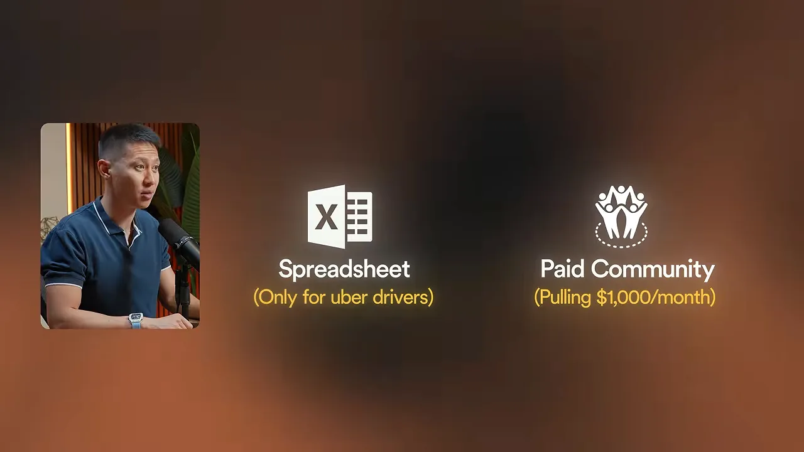
35개 밑에 깔린 하나의 규칙
발표자는 모든 아이디어에 공통된 규칙을 하나로 정리해요. 돈을 버는 건 상품 자체가 아니라, 누구를 위해 만들었고 어떻게 포장했느냐라는 거예요. 같은 아이디어도 엉뚱한 사람에게 가면 가치가 없고, 맞는 사람에게 가면 사업이 돼요.
It's not the product that makes money. It's who you make it for and how you package it.
돈을 버는 건 상품이 아니에요. 누구를 위해 만들고 어떻게 포장하느냐예요.
— 영상 01:38
아이디어는 여섯 묶음으로 나눠서, 이번 주말에 만들 수 있는 쉬운 것부터 가장 큰 것 순서로 올라가요. 아래 그림이 그 순서예요. 발표자는 마지막에 이 여섯 묶음이 따로 노는 게 아니라 하나의 사다리라고 말해요.
템플릿: 좁힐수록 비싸져요
템플릿이라고 하면 다들 노션 템플릿부터 떠올려요. 틀린 생각은 아니지만, 이미 1만 명쯤이 그 자리에 있어요. 발표자는 템플릿에서 돈이 되는 건 형식이 아니라 구체성이라고 해요.
1번 · 겁나는 결정을 돕는 계산기
가계부 템플릿은 누구나 만들어서 10달러 정도에 팔려요. 40달러쯤 아껴 주는 도구니까요. 반면 임대 부동산 분석기, 집을 고쳐 되파는 수익 계산기, 작은 온라인 가게용 가격 계산기는 사정이 달라요. 사는 사람이 틀리면 크게 잃는 결정을 돕거든요. 임대 부동산 계산기는 20만 달러짜리 결정을 지켜 줘요.
2번 · 같은 뼈대, 직업별 이름
지출 관리표를 하나만 만들어요. 그리고 '지출 관리표'가 아니라 'Uber 기사용', 'Etsy 판매자용', 'Airbnb 호스트용'으로 팔아요. 뼈대는 그대로 두고 이름표를 바꾸고 그 직업에만 필요한 칸 서너 개를 더하면 돼요. 아래 화면 가운데에 적힌 'Etsy seller expense tracker'가 그런 이름이에요.
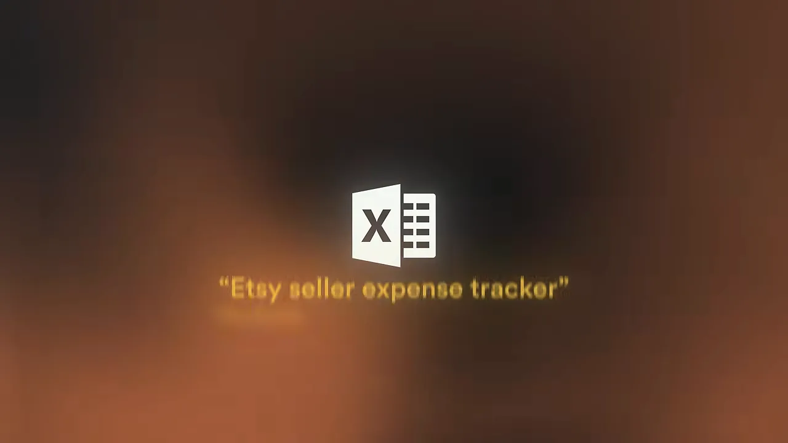
3번 · 구경용이 아니라 빈칸 채우기용 스와이프 파일
스와이프 파일은 검증된 예시를 따라 쓰라고 모아 둔 자료예요. 보통 '잘 쓴 이메일 50개'처럼 팔아요. 문제는 사는 사람이 읽고 똑똑해진 기분만 들고, 자기 사업에 맞게 옮기는 일은 여전히 남는다는 거예요. 그래서 이름, 제안, 마감일 같은 바뀌는 부분을 모두 괄호로 비워 두라고 해요. 그러면 커피 한 잔 마시면서 채워 넣을 수 있어요. 파는 건 문장이 아니라 빈 화면 앞에서 막히는 순간을 없애 주는 거예요.
4번 · 한 업종용 브랜드 키트
로고 템플릿 하나는 흔해서 아무도 관심이 없어요. 대신 새 캔들 가게가 초보처럼 보이지 않게 해 주는 로고, 색, 글꼴, 첫 인스타그램 게시물 10개를 한 상자로 묶어요. 테크 스타트업용은 굵고 단순하게, 수공예 가게용은 따뜻하고 손맛 나게 만드는 식으로 한 업종을 깊게 파요. 그러면 사는 사람은 파일 묶음이 아니라 '첫날부터 자리 잡은 가게처럼 보이기'라는 변화에 돈을 내요.
5번 · 번들
번들은 새 상품이라기보다 다른 상품 위에 얹는 지렛대예요. 아래 화면 위쪽에 29달러짜리 폴더 세 개가 있어요. 송장 템플릿, 지출 관리표, 손익 계산표예요. 따로 팔면 사람들은 하나만 사요. 아래쪽처럼 셋을 '소상공인 재무 완성 키트'로 묶어 99달러에 팔면, 사는 사람 머릿속에서는 '29달러에 하나'보다 '99달러에 넷'이 훨씬 이득으로 느껴져요.
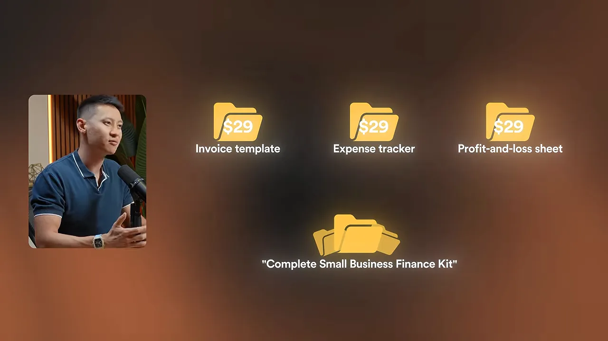
빠르게 세 개 더
- 6번 한 분야 전용 이력서 템플릿. 간호사와 소프트웨어 엔지니어는 전혀 다른 이력서가 필요해요.
- 7번 한 직업 전용 랜딩 페이지 템플릿. 빈 캔버스가 아니라 코칭 사이트처럼 구매로 이어지게 짠 것이에요.
- 8번 다른 디지털 판매자에게 파는 목업 팩. 금광에서 금 캐는 사람에게 삽을 파는 셈이에요.
여덟 개 모두 결론은 같아요. 좁은 쪽이 이겨요.
작은 소프트웨어: 코딩 장벽이 내려갔어요
발표자가 가장 기대하는 묶음이에요. 예전에는 작은 소프트웨어 하나를 만들려 해도 개발자를 고용하거나 1년은 코딩을 배워야 했어요. 이제는 원하는 도구를 평범한 말로 설명하면 주말 안에 돌아가는 버전을 얻을 수 있어요. 그래서 목록 전체에서 마진이 가장 높은데도 아직 거의 아무도 만들지 않는 상품이라고 봐요.
9번 · 귀찮은 일 하나를 지우는 버튼
소프트웨어라고 하면 기능 100개짜리 거대한 플랫폼을 떠올리기 쉬워요. 하지만 조용히 돈을 버는 도구는 딱 한 가지만 해요. 스프레드시트의 배송 추적 번호를 쇼핑몰에 바로 넣어 주는 도구 하나로 매달 돈을 버는 사람이 있대요. 누군가의 일주일에서 지긋지긋한 한 시간을 지워 주니까요. 작업이 좁을수록 큰 회사는 신경 쓰지 않아서, 그 빈틈이 내 몫이 돼요.
10번 · 실제로 돈이 새는 업종
요즘 소프트웨어를 만드는 사람들은 대부분 팟캐스터나 유튜버 같은 크리에이터를 위해 만들어요. 발표자는 반대쪽을 보라고 해요. 아래 화면은 한 배관공이 한 말이에요. 놓친 전화 몇 통 때문에 일주일 만에 500달러를 잃었대요.
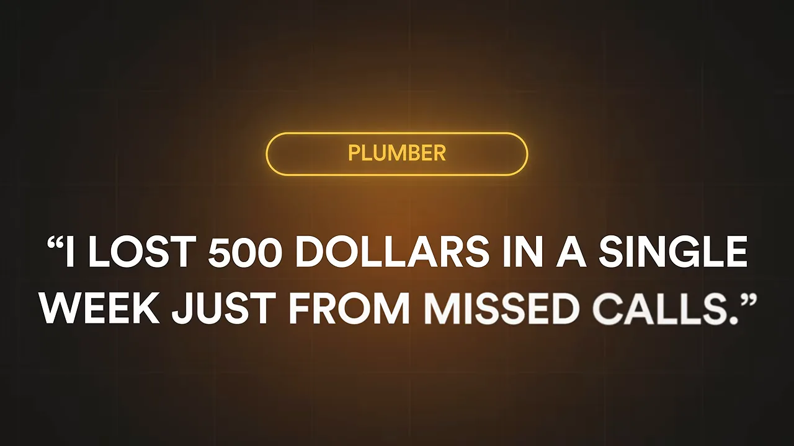
오전 10시에 개 두 마리를 겹쳐 예약하고 사과 전화를 돌리는 반려견 미용사, 코르크판에 메모지를 붙여 직원을 배정하는 청소 업체도 같아요. 이 사람들은 돈이 있고, 돈이 새는 문제가 있어요. 화려하지 않아서 아무도 만들어 주지 않을 뿐이에요. 겹친 예약이나 잃어버린 청구서처럼 그 출혈 하나를 막는 도구를 만들고, 장난감처럼 싸게 받지 말라고 해요. 월 300달러는 안 내도 30~80달러라면 일감을 놓치지 않으려고 낼 거래요. 배관공, 미용사, 청소 업체용 도구가 이미 있다는 것 자체가 돈이 된다는 증거라고 봐요.
11번 · 모두를 위한 도구의 버티컬 버전
Linktree는 프로필에 링크 하나만 걸어 두면 여러 링크를 모아 보여 주는 도구예요. 누구에게나 맞아서, 바꿔 말하면 누구에게도 꼭 맞지는 않아요. 아래 화면처럼 같은 아이디어를 부동산 중개인 전용, 뮤지션 전용, 피트니스 코치 전용으로 나눠 다시 만드는 거예요. 화면 문구대로 핵심 아이디어는 같고, 단어 하나, 기능 하나, 예시 하나까지 그 한 사람에게 말을 거는 거예요.
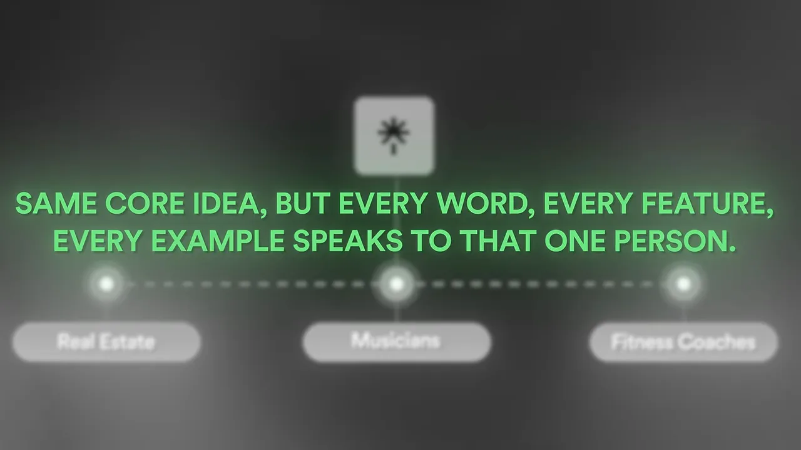
12번 · 만들기 전에 돈부터 받기
발표자는 이걸 다른 아이디어보다 먼저 하라고 해요. 가장 흔한 실패는 아이디어 하나로 6개월을 동굴에 들어가 만들고, 출시했는데 아무도 안 오는 거예요. 잘하는 사람들은 순서를 뒤집어요. 아래 화면의 세 단계예요.
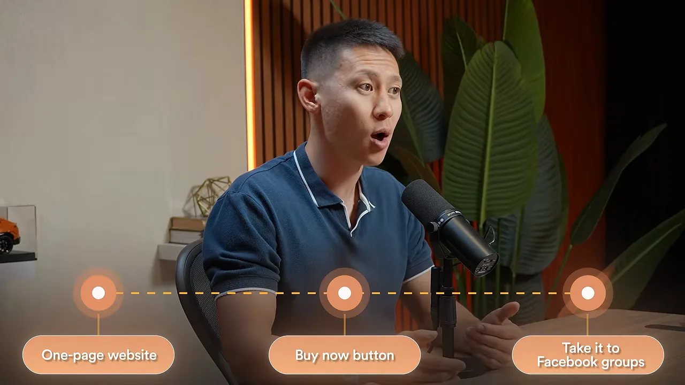
그리고 지켜봐요. 사람들이 결제하려고 버튼을 누르면 사업이 되는 거니 그때 만들어요. 아무도 안 누르면 6개월을 공짜로 아낀 거예요. 코드 한 줄 쓰기 전에 평생 이용권 50개를 팔아 2만 달러를 모은 창업자도 있대요. 발표자는 그 돈보다 '이게 있어야 한다'고 손을 든 50명이 더 값지다고 해요.
flowchart LR
A["한 페이지 소개 + 구매 버튼"] --> B["대상자가 모인 그룹 3곳에 올리기"]
B --> C{"결제하려고 누르나요?"}
C -- "누른다" --> D["그때 만들기"]
C -- "안 누른다" --> E["6개월 아낌, 다음 아이디어로"]
빠르게 세 개 더
- 13번 한 부류의 사람을 위한 출시 전 대기자 명단 도구.
- 14번 후기를 한곳에 모아 보여 주는 '사랑의 벽' 도구. 지금은 사람들이 도구 세 개를 엮어 쓰고 있대요.
- 15번 블로그 글 하나를 일주일 치 소셜 게시물로 바꿔 주는 도구. 손으로 하기 싫어하는 특정 크리에이터를 대상으로 해요.
AI: 프롬프트 말고 일하는 기계를 팔아요
발표자는 이 묶음을 넣을지 망설였대요. 뻔한 버전은 이미 끝났기 때문이에요. 아래 화면이 그 뻔한 버전, 2023년식이에요. 프롬프트를 PDF(Portable Document Format)에 담아 5달러에 파는 거예요.
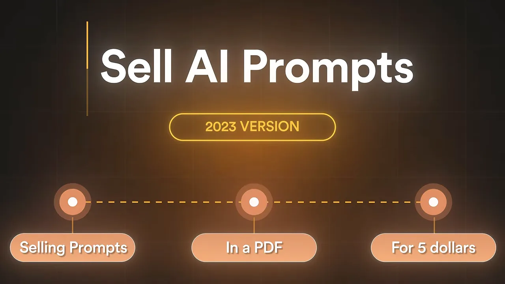
시장은 프롬프트를 파는 데서 '능력'을 파는 쪽으로 옮겨 갔어요. 특정한 사람을 위해 특정한 일을 그냥 해 주는 무언가예요. 값도 5달러에서 200달러로 올랐는데, 아직 거의 아무도 이 변화를 따라오지 못했다고 해요.
16번 · 비싼 일 하나를 하는 커스텀 봇
프롬프트는 남에게 건네주고 잘 써 주길 바라는 지시문이에요. 커스텀 GPT(Generative Pre-trained Transformer)는 완성된 기계예요. 지식을 미리 넣고, 다듬고, 시험까지 끝내서 열기만 하면 일을 해요. 들어가는 작업은 비슷한데 값은 크게 달라요.
| 파는 것 | 영상이 말한 값 | 사는 사람이 얻는 것 |
|---|---|---|
| 2023년식 프롬프트 PDF | 5달러 | 지시문 모음. 쓰는 건 본인 몫이에요 |
| 프롬프트 문서 | 19달러 | 잘 다듬은 지시문 |
| 지식을 넣은 커스텀 봇 | 200달러 이상 | 이미 일을 알고 출근하는 전문가 |
와인을 저녁 메뉴에 맞춰 고르기, 소상공인 세금 질문에 답하기, 처음 집을 빌려주는 사람에게 헷갈리는 임대 계약 조항 설명하기처럼, 좁고 값진 일 하나를 골라 그걸 확실히 해내는 봇을 만들라고 해요.
17번 · 프롬프트가 아니라 워크플로
프롬프트 하나는 한 가지 일만 해요. 실제 일은 하나로 끝나지 않고 사슬처럼 이어져요. 팟캐스터는 에피소드를 녹음하고 나서 블로그 글, 소셜 캡션 다섯 개, 구독자 이메일을 따로 만들어야 해요. 일이 네 개예요. 그래서 대본을 붙여 넣으면 단계를 차례로 밟아 네 가지 결과물을 모두 돌려주는 '조립 라인'을 팔아요. 두 시간짜리 일을 먹고 결과를 내놓는 기계예요.
여기서 값을 더 받게 해 주는 게 있어요. 예시 입력과 결과를 함께 넣어서, 사는 사람이 사기 전에 이미 돌아가는 모습을 보게 하는 거예요. 사람들은 확신에 돈을 내요.
18번 · 한 업종용 AI 툴킷
모두에게 AI(Artificial Intelligence) 프롬프트를 파는 건 아무에게도 안 파는 것과 같아요. 아래 화면처럼 부동산 중개인을 위한 툴킷이라면 달라요. 매물 소개 글, 매수자 후속 이메일, 협상 대본은 중개인이 매주 하는 일이라서 '나를 아는 상품'처럼 느껴져요.
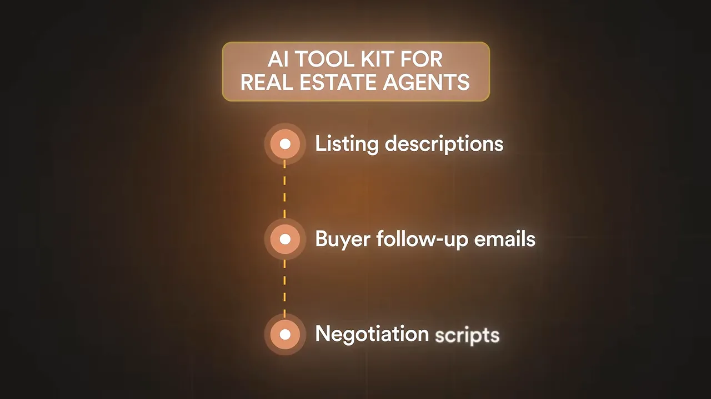
영리한 부분은 그다음이에요. 툴킷은 한 번 들어오게 하는 문이에요. 워크플로에는 매달 새 입력이 필요하니 작은 업데이트 구독을 붙여요. 자기 사무실에 맞게 고치고 싶은 사람에게는 맞춤 서비스로 제대로 된 돈을 받아요. 툴킷 하나로 세 단계의 고객이 생기는 거예요. 다만 한 업종을 깊게 파서 '이 사람은 내 일을 안다'는 믿음을 얻었을 때만 통해요.
빠르게 세 개 더
- 19번 자기 계정에 붙여 넣기만 하면 바로 전문가가 생기는 봇 설정.
- 20번 매달 바뀌는 분야를 위한 프롬프트 업데이트 구독. 한 부분은 무료로 풀어 미끼로 써요.
- 21번 메가 팩의 반대. 좁은 문제 하나를 푸는, 시험을 마친 작은 팩에 결과 예시를 붙여요. 집중이 프롬프트 1,000개를 이겨요.
가르치기: 큰 강의보다 작은 결과
이제 도구에서 가르치기로 넘어가요. 발표자는 이 묶음에 목록 전체에서 가장 비싼 실수가 숨어 있다고 해요. '아는 걸 판다'고 하면 다들 바로 강의를 만들어요. 넉 달 동안 40시간짜리 영상을 찍고, 아무도 끝까지 보지 않고, 망해요. 지금 팔리는 건 크고 빠짐없는 강의가 아니라 한 가지 결과를 빨리 내 주는 작은 상품이에요. 작게 만드는 건 타협이 아니라 전략이라는 거예요.
22번 · 콜드 스타트 풀어 주기
어느 분야든 다른 모든 걸 막고 있는 첫 번째 벽이 있어요. 새 Airbnb 호스트가 예예요. 다들 "좋은 리뷰를 받으세요"라고 하지만 쓸모없는 조언이에요. 진짜 문제는 첫 리뷰예요. 리뷰가 0개인 숙소를 믿을 이유가 손님에게는 없거든요. 그래서 첫 다섯 개를 만들어 주는 상품을 예로 들어요. 이름은 'The First Five', 30분 분량에 47달러예요.
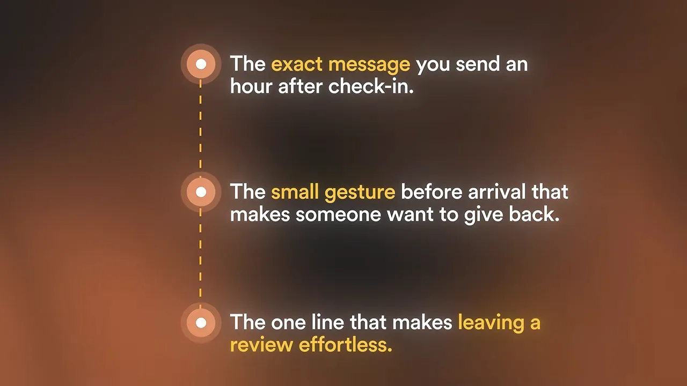
팔기엔 너무 작아 보여도 통하는 이유가 있어요. 새 호스트가 원하는 예약, 수입, 다음 리뷰가 전부 그 벽 너머에 있어요. 그 벽 하나를 넘게 해 준다면 47달러는 기꺼이 내요. 고객 사례가 없어서 첫 고객을 못 구하는 새 프리랜서, 리뷰가 없는 작가처럼 콜드 스타트가 있는 곳이면 어디든 같은 방법이 통해요.
23번 · 좁은 사람을 위한 내부자 플레이북
결혼식 사진가를 예로 들어요. 사진 잘 찍는 법은 넘쳐나서 아무 가치가 없어요. 그런데 사진가가 밤잠을 설치는 문제는 따로 있어요. 아래 화면에 꼬리표로 붙은 '가격'이에요.
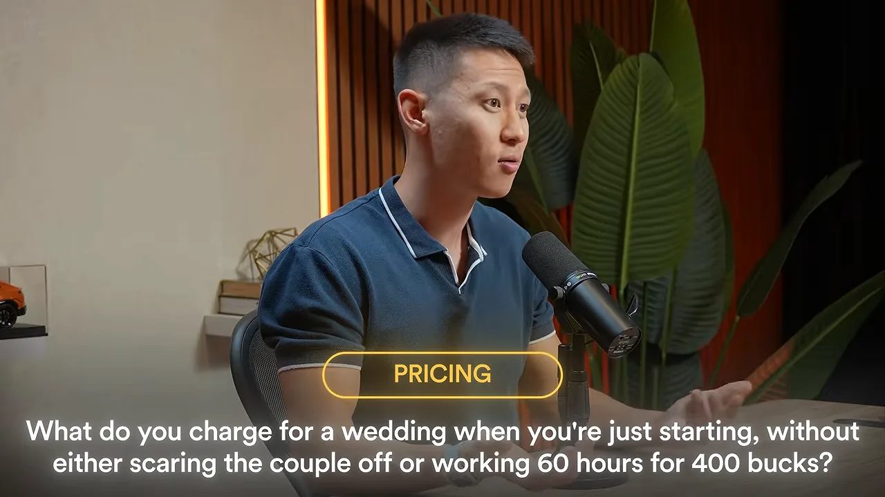
그래서 '결혼식 가격 플레이북'을 만들어요. 정확한 패키지 구성, 커플이 기준으로 삼도록 가운데에 두는 가격, 깎아 달라고 할 때 할 말을 담아요. 앵커링을 쓰는 셈이에요. 일반적인 '사진 사업 시작하기' 전자책은 몇 달러에 팔리고 사라지지만, 이 플레이북은 10배 값에 팔려요. 제목을 본 사진가가 '바로 내 문제'라고 느끼니까요. 같은 방식으로 프리랜서 개발자용 가격 플레이북, 1인 대행사 대표용 첫 채용 플레이북, 개인 상담소를 여는 치료사용 보험사 응대 플레이북도 만들 수 있어요.
24번 · 수업 말고 도구를 팔기
만들기 전에 거의 아무도 묻지 않는 질문이 있대요. 이 사람에게 필요한 게 정보인가, 도구인가. 대부분 정보 쪽으로 기울어요. 어려운 대화를 하는 법을 설명하는 영상이 정보라면, 줌 통화 중에 화면에 띄워 놓고 그대로 읽는 대본은 도구예요. 사는 사람은 전문가가 되고 싶은 게 아니라 숙제 없이 결과를 원해요. 그래서 협상이든 식단이든 이력서든, 가르치기 전에 완성품을 그냥 건넬 수 없는지 먼저 물어보라고 해요.
빠르게 세 개 더
- 25번 무료로 첫 성과를 내 주는 미니 강의. 돈을 받기 전에 가르칠 수 있다는 걸 먼저 보여 줘요.
- 26번 한 직업을 위한 AI 마이크로 강의. 'AI 입문'이 아니라 '부동산 중개인을 위한 AI'예요.
- 27번 한 번뿐인 중요한 순간용 체크리스트. 출시, 첫 직원 채용, 첫 세금 신고처럼 틀릴까 봐 겁나는 순간이에요.
커뮤니티: 매달 들어오는 돈
지금까지는 모두 한 번 팔고 끝나는 상품이었어요. 발표자는 디지털 상품으로 조금 버는 사람과 안정적으로 버는 사람의 가장 큰 차이가 돈이 한 번 들어오느냐, 매달 들어오느냐라고 해요. 그리고 매달 돈을 내게 만드는 건 콘텐츠를 더 쌓는 게 아니라고 해요.
28번 · 지원 공백을 메우는 커뮤니티
강의를 산 사람은 들떠서 시작했다가 3강쯤에서 벽에 부딪혀요. 물어볼 게 생겼는데 강의를 판 사람은 이미 떠나고 없어요. 물어볼 사람 없이 막힌 그 순간이 기회라는 거예요. 예를 들어 초보 목공 강의를 듣고 첫 작품에서 막히는 사람들을 위해 월 30달러짜리 공방을 열어요. 약속은 하나예요. 막히면 사진을 올리고, 먼저 해 본 사람이 다음에 뭘 할지 알려 줘요.
멤버십에서 사람들이 가장 많이 틀리는 부분이 여기라고 해요. 상품이 콘텐츠라고 생각하는데, 강의 하나쯤은 온라인에서 공짜로 찾을 수 있어요. 찾을 수 없는 건 밤 11시에 막혔을 때 내 상황에 맞게 답해 주는 사람이에요. 사람들이 매달 내는 건 정보가 아니라 막힌 걸 풀어 주는 것이에요. 세계 최고 전문가일 필요도 없어요. 한 걸음 앞선 사람이 한 걸음 뒤의 사람을 돕는 방을 운영하면 돼요.
29번 · 너무 작아 보이는 틈새
좋은 아이디어를 죽이는 생각은 늘 같아요. '너무 작잖아, 누가 돈을 내?' 발표자는 영상 첫머리에 꺼낸 캘리그라피 이야기를 다시 가져와요. 아래 화면처럼 손으로 예쁘게 글씨 쓰는 법을 가르치는 커뮤니티예요. 취미처럼 들리지만, 화면에 나온 대로 회원이 1,200명이에요.
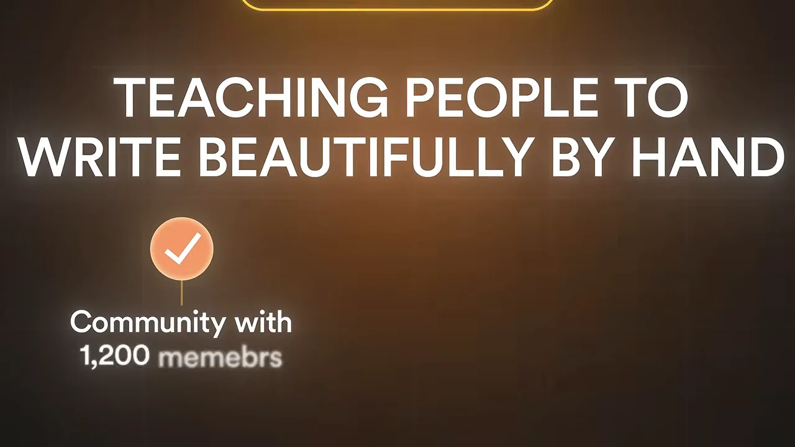
다음 화면은 피클볼 커뮤니티예요. 동네 체육관에서 쉽게 배우는 라켓 운동인데, 발표자 부부도 친대요. 회원 1,400명이 월 39달러를 내요.
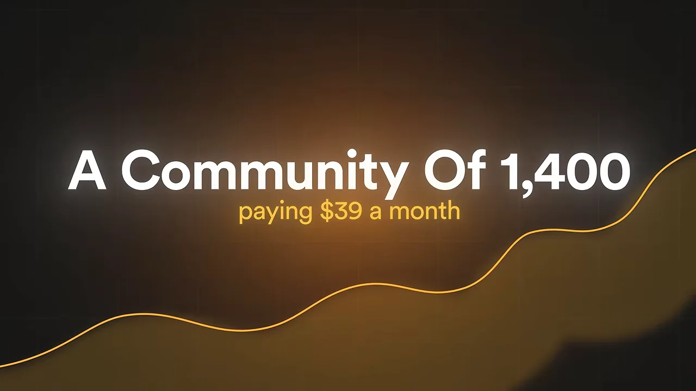
열정은 틈새가 얼마나 작은지 신경 쓰지 않아요. 손글씨든 피클볼이든 낡은 신시사이저 복원이든, 거기 빠진 사람은 자기만큼 관심 있는 사람들과 한 방에 있으려고 월 10달러쯤은 기꺼이 내요. 작지만 빠져 있는 사람들이 크지만 지루해하는 사람들을 이겨요. 빠져 있어야 오래 남고, 반복 매출에서는 남아 있는 게 전부예요. 물어야 할 건 '시장이 충분히 큰가'가 아니라 '충분히 빠져 있나'예요.
30번 · 절박한데 아무도 챙기지 않는 사람들
체중 감량은 세상에서 가장 붐비는 시장이에요. 가장자리만 빼고요. 갱년기 여성만을 위한 체중 감량 커뮤니티가 월 37달러에 운영되고 있대요. 아래 화면 문장이 이 커뮤니티를 설명해요.
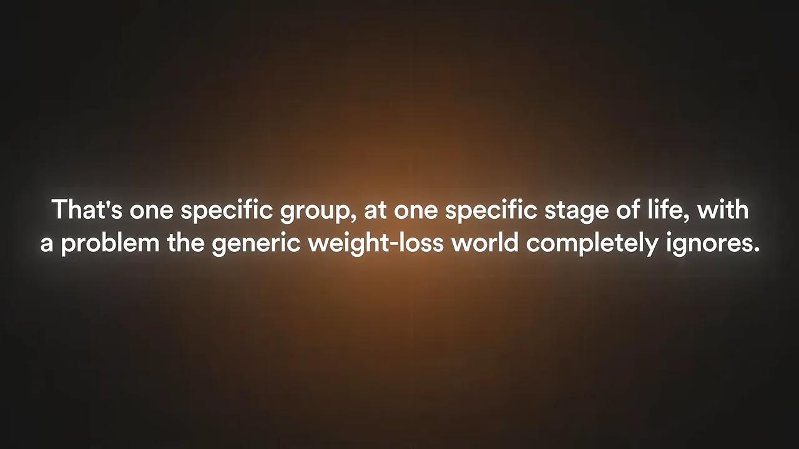
직관과 반대인 부분이에요. 시장의 일반 버전은 가장 붐비고 가장 힘든 곳인데, 같은 시장의 구체적인 버전은 비어 있을 수 있어요. 체중 감량으로는 절대 못 이기지만, 갱년기 여성의 체중 감량은 차지할 수 있어요. 이 사람들은 소외돼 있고, 답답해하고, 자기 상황을 알아주는 곳을 적극적으로 찾고 있으니까요. 대상이 구체적이고 감정이 강하면 찾아가기도 쉽고 더 오래 머물러요.
| 영상 속 커뮤니티 | 회원 수 | 월 회비 | 무엇을 파나요 |
|---|---|---|---|
| 목공 공방 (가상 예시) | — | 30달러 | 첫 작품에서 막혔을 때의 답 |
| 캘리그라피 | 1,200명 | 9달러 | 같은 취미에 빠진 사람들과의 방 |
| 피클볼 | 1,400명 | 39달러 | 같은 취미에 빠진 사람들과의 방 |
| 갱년기 여성 체중 감량 | — | 37달러 | 자기 상황을 알아주는 곳 |
솔직한 한마디
발표자는 이 묶음에 대해 거짓말하지 않겠다며 덧붙여요. 커뮤니티는 손 놓고 굴러가는 사업과 정반대예요. 직접 나와서 챙겨야 해요. 그래서 남이 따라 하기 어렵고, 제대로 하면 몇 년 동안 돈이 들어와요.
빠르게 세 개 더
- 31번 한 직함만 들어올 수 있는 폐쇄형 네트워크. '이사급 이상만'처럼 입장 조건 자체가 가치예요.
- 32번 무료 커뮤니티를 먼저 열고, 두어 달마다 유료 챌린지로 이어지게 해요.
- 33번 측정할 수 있는 목표 하나를 함께 지키는 모임. 다른 사람이 기다리고 있으니 나오게 돼요.
꼭대기: 결과를 파는 고가 프로그램
마지막 묶음은 짧지만, 발표자가 처음부터 아껴 둔 두 개예요. 지금 다시 시작한다면 자기가 직접 만들겠다는 아이디어예요. 발표자는 여기서 영상 전체의 요지를 정리해요. 템플릿, 도구, 작은 상품, 커뮤니티는 목적지가 아니라 진입로라는 거예요. 20달러, 40달러짜리로 도움을 받고 '이 사람은 뭘 좀 아는구나' 믿게 된 사람 중 일부는 훨씬 큰 문제를 갖고 있어요. 그 문제를 풀어 주는 데 큰돈을 내요.
34번 · 물건 더미가 아니라 결과를 팔기
작은 상품들로 프리랜서들이 일을 정리하도록 도와 왔다고 해 봐요. 20, 40, 60달러짜리예요. 그런데 그중 일부는 훨씬 아픈 문제가 있어요. 시간당 50달러에 묶여서 더 받지를 못해요. 그래서 그 문제를 고치는 프로그램을 만들어요. 시간제 일을 범위와 값이 정해진 상품화된 서비스로 바꿔 주는 거예요. 아래 화면의 'The Rate Escape'예요.
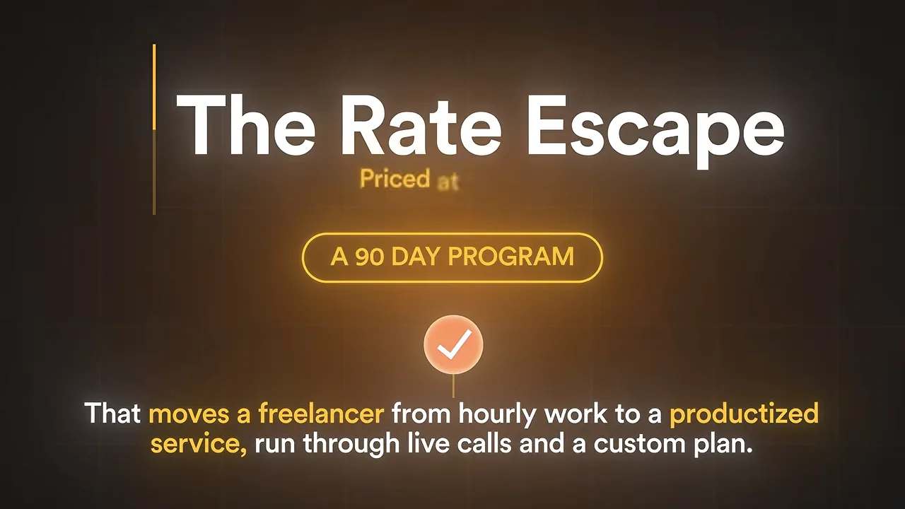
5,000달러가 터무니없지 않은 이유도 설명해요. 시간당 50달러 받던 사람이 프로젝트 하나에 5,000달러를 받게 되면, 첫 고객 한 명으로 프로그램 값을 다 뽑아요. 90일 동안의 내 시간을 파는 게 아니라 그 사람이 얻을 결과의 일부를 받는 거예요.
고가 상품에서 거의 모두가 하는 실수가 있대요. 영상, 보너스, 모듈을 계속 쌓아서 더미가 충분히 커 보이게 만드는 거예요. 발표자는 거꾸로라고 해요. 5,000달러를 내는 건 물건이 많아서가 아니라 아프고 비싼 문제 하나를 없애고 싶어서예요. 아래 화면이 그 원리를 숫자로 보여 줘요.
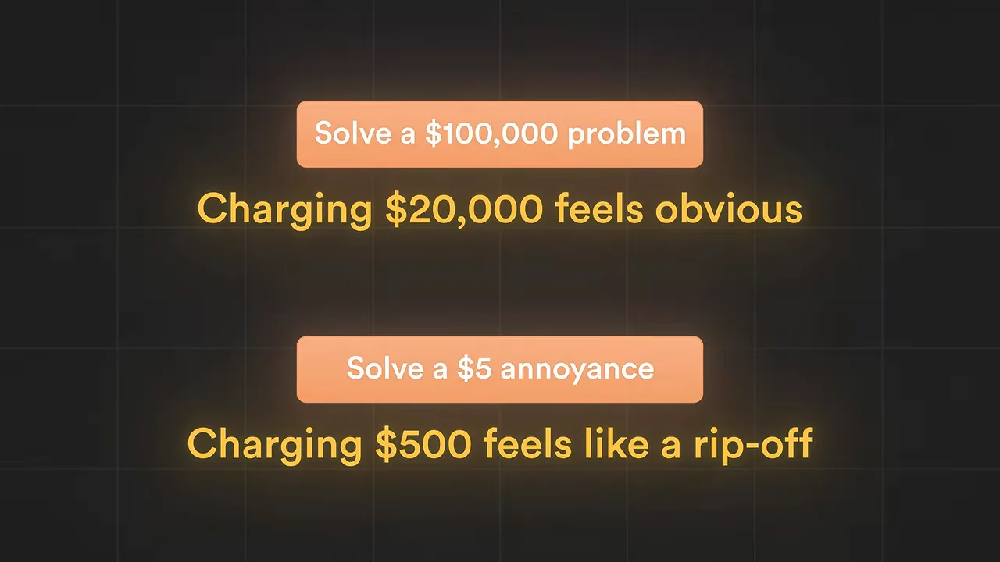
35번 · 던 위드 유로 전달해서 삶을 지키기
5,000달러짜리 상품을 만들고 나면 함정이 기다려요. 모든 걸 1:1로 해야 할 것 같아요. 고객이 열 명쯤 되면 주 80시간을 일하고, 스스로 감옥을 지은 셈이 돼요. 그래서 구조를 다르게 짜요. 발표자는 이걸 던 위드 유, 곧 함께 해 주는 방식이라고 불러요. 아래 화면 두 줄이 그 뼈대예요. 이미 만들어 둔 시스템이 중심이 되고, 영상 앞부분의 템플릿과 미니 강의 같은 작은 상품들이 커리큘럼이 돼요.
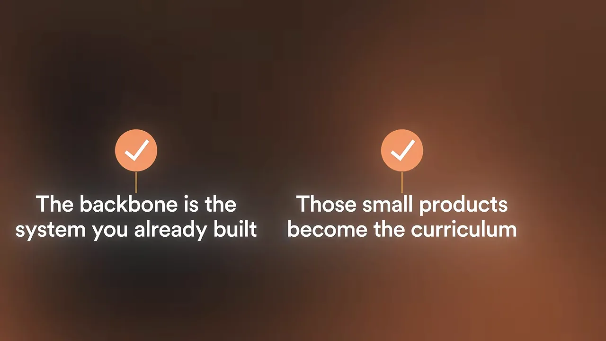
발표자는 틀리는 길이 두 가지라고 해요. 하나는 순수 1:1이에요. 고객 몇 명에서 번아웃이 와요. 더 교묘한 다른 하나는 반대쪽이에요. 미리 녹화한 영상과 자동화로 손을 완전히 떼려는 거예요. 5,000달러를 냈는데 영상 모음만 받으면 사람들은 속았다고 느껴요. 싸구려 강의처럼 보이는데, 그들이 원한 건 '당신'이었으니까요. 답은 그 사이에 있어요.
원래 하나의 사다리였어요
발표자는 마지막에 앞의 묶음들을 다시 묶어요. 앞에서 만든 작은 상품들은 이 고가 상품과 경쟁하지 않고, 그 밑을 받치는 바닥이 돼요. 그래서 여섯 묶음은 처음부터 따로 노는 여섯 가지가 아니라 하나의 사다리였다는 거예요. 첫 섹션의 계단 그림이 바로 이 사다리예요.
하나만 고르세요
35개를 듣고 머리가 좀 어지럽다면 그게 의도래요. 발표자와 같은 고민, 곧 '좋은 아이디어는 너무 많은데 손이 모자란다'를 안고 가게 하려는 거예요. 그래도 35개를 한꺼번에 하다 지치지 말라고 해요. 35개도, 10개도 말고, 듣다가 '잠깐, 이건 나도 할 수 있겠는데' 싶었던 하나만 골라 그것만 만들라는 거예요.
The people who win at this aren't the ones with the most ideas, they're the ones who actually finish the first one.
이기는 사람은 아이디어가 가장 많은 사람이 아니라, 첫 번째 것을 실제로 끝낸 사람이에요.
— 영상 24:08